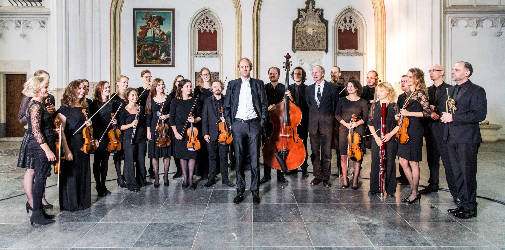
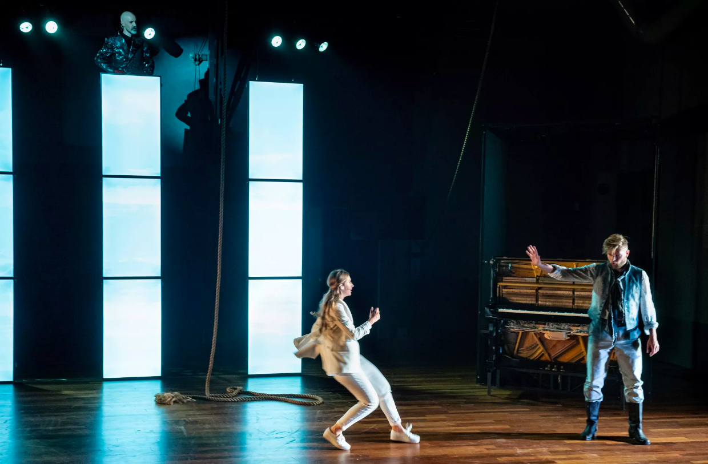

Upcoming Concerts
-
- May 14th 2022 - 20.00h Handel/Purcell' - Ars Musica Orkest
- Ridderkerk
- Tickets and info: stichtingarsmusica.nl
-
- May 18th 2022 - 20.00h: Mendelssohn - Elias
- Tivoli Vredenburg, Utrecht
- Tickets and info: tivolivredenburg.nl
-
- June 11th 2022 - 20.00h 'Zomerlicht' - Ars Musica Orkest
- Zusterplein 12 Zeist
- Tickets and info: stichtingarsmusica.nl
-
- June 18th 2022 - 15.00h 'Zomerlicht' - Ars Musica Orkest
- Noordendijk 148, Dordrecht
- Tickets and info: stichtingarsmusica.nl
-
- June 18th 2022 - 20.00h Schopfung - Ars Musica Orkest
- Scheveningen
- Tickets and info:
-
- July 22th 2022 - 15.00h Duo Groenewold & de Zeeuw
- Brummen
- Tickets and info: Private concert
-
- Aug 10th 2022 - 20.00h TRYOUT - Holland Opera - Divorce of the Figaro (Mozart)
- Veerensmederij Amersfoort
- Tickets and info: hollandopera.nl
-
- Aug 11th 2022 - 20.00h TRYOUT - Holland Opera - Divorce of the Figaro (Mozart)
- Veerensmederij Amersfoort
- Tickets and info: hollandopera.nl
-
- Aug 12th 2022 - 20.00h PREMIERE - Holland Opera - Divorce of the Figaro (Mozart)
- Veerensmederij Amersfoort
- Tickets and info: hollandopera.nl
-
- Aug 13th 2022 - 20.00hHolland Opera - Divorce of the Figaro (Mozart)
- Veerensmederij Amersfoort
- Tickets and info: hollandopera.nl
The Amstel Consort
This exciting viol consort, consisting of 4 viola da gambas and a violone, is founded in the Spring of 2019. They are one of very few ensembles to focus mainly on 17th century consort music and are dedicated to the historical perfomance practise. Their goal is to inspire the public of today with the music of past centuries and to recreate the experience of 17th century music making and listening. The viol concort was and is music for the elite, for the living room and it reaches for intimite beauty instead of plain virtuosity.
The Amstel Consort created a number of interesting programs with music from Germany, France and England, in different settings. New (or actually very old) pieces are being discoverred, but also well known pearls are brought to life in their original form. The programs are perfect for an intimite invironment, where the audience is sitting next to and almost in the ensemble itself. If you're interested in booking the consort for your soiree, please contact me via the contact page.
Recently the Amstel Consort recorded some demo pieces, to give you a taste of the beauty that is consort music. Below you can listen to the pieces, recorded on June 4th 2019, by Andrea Friggi.
Ensembles
Ars Musica
The Ars Musica Orkest (AMO) is a young, professional, enthousiastic and flexible orchestra and performs throughout the Netherlands. The orchestra is being led by conducter Patrick van der Linden. During performances the orchestra involves the audience in their musical enthousiasm. Their programs consists of music from Bach to Beethoven, but always with something new and unknown as well. Another factor for the orchestra is music education to children and adults: shows are being written especially for school audiences and the foundation Ars Musica has a choral school for children to support their musical education. More information about their projects can be found on their website.
Holland Opera
Holland Opera is a modern opera company in the center of the Netherlands. They are know for there newly composed and staged operas and they have there own theater location in the center of Amersfoort. Holland Opera is the first operahouse for the youth, and are standing out internationally on this point. Multiple operahouses in Germany and Denmark put the youth opera productions of Holland Opera on the stage.
Holland Opera's mission is to make a modern and poetic storytelling, with an colorful, original musical setting which appeals to both the youngster and the adults. All of there operas are based on themes that are currently vivid in society and which connect to there (young) audiences.
Duo Groenewold & de Zeeuw
This newly formed duo by violinist Jens Groenewold and gambist Robin de Zeeuw is perfect for your wedding, reception, dinner party or funeral. Their repertoire consists of beatutiful pieces from the baroque era to own made arangements of classics - even popular songs! This wonderful combination of the two instruments brings a soothing, inspiring and lively tone to your event which enriches your day! If you're interested in booking Duo Groenewold & De Zeeuw for your soiree, wedding or funeral please contact me via the contact page.
Le Nuove Musiche
This newly formed duo by violinist Jens Groenewold and gambist Robin de Zeeuw is perfect for your wedding, reception, dinner party or funeral. Their repertoire consists of beatutiful pieces from the baroque era to own made arangements of classics - even popular songs! This wonderful combination of the two instruments brings a soothing, inspiring and lively tone to your event which enriches your day! If you're interested in booking Duo Groenewold & De Zeeuw for your soiree, wedding or funeral please contact me via the contact page.
Double Bass lessons in Utrecht
Have you always wanted to play on the biggest and lowest string instrument there is, and have you always wanted to play in orchestras and ensembles together with other musicians? Then the double bass is the instrument for you! DOUBLE BASS STUDIO UTRECHT offers classical double bass lessons by a professional and certifide double bassist, Robin de Zeeuw. His lessons are focussed on getting the student as quickly as possible on a good level to start playing with other people, because playing together is what it is all about! He's educated as a classical double bass player at the Conservatory of Utrecht (Bachelor) and did his master at the Conservatory of Amsterdam, where he specialized in Early Music (violone and viola da gamba). He is, next to teaching double bass, also active as an orchestra and ensemble musician, mainly specialized in Early Music.
The lessons will take place in a studio in the center of Utrecht, in an old factory building at the Gruttersdijk 12. The former factory is nowadays being used by various music teachers and other creative freelancers. Below you can find all the information you need to start playing bass!
About the lessons
- Individual attention
- Focus on getting you to play with others
- Various styles of music
- Music theory
- For every level - from beginner to professional
- Developing your musicality
- Creating a relaxt playing technique
Prices 2021/2022
45 minutes every week, 1-on-1 lessons
45 minutes every other week, 1-on-1 lessons
About me
Robin (1988-) started his musical career at the Conservatory of Amsterdam where he studied Jazz double bass with Ruud Ouwehand and Ernst Glerum, but already after the first year he decided to continue his studie in Classical double bass. He went to studie with Quirijn van Regteren Altena at the Conservatory of Utrecht, from were he graduated with a 9,5 in 2013. Next to his Bachelor in music he also studied Musicology at the University of Utrecht, where he received his diploma in 2013 as well. After a few years of working in orchestras and ensembles Robin decided to specialize further in Early Music and started his Master violone with Maggie Urquhart at the Conservatory of Amsterdam. His finished this Master with an 8,5 in September 2018. During this study he also took up the viola da gamba and took lessons with Mieneke van der Velden.
Robin has his own teaching practise since 2010 in Utrecht and 2019 in Amsterdam as well. In September 2018 he was hired as double bass teacher of the Utrecht Centrum voor de Kunsten (UCK). Next to teaching the double bass Robin plays in a wide variety of orchestras and ensembles. More information on the most prominent of those ensembles are found on the Ensembles page.
Contact me
Do you have a question or do you want to sign up for double bass lessons? Then don't hesitate to fill out the form below and I'll get back to you as soon as I'm able!